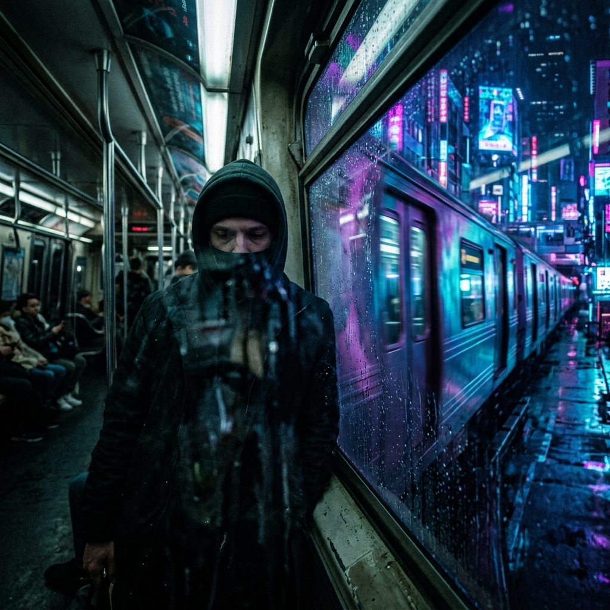
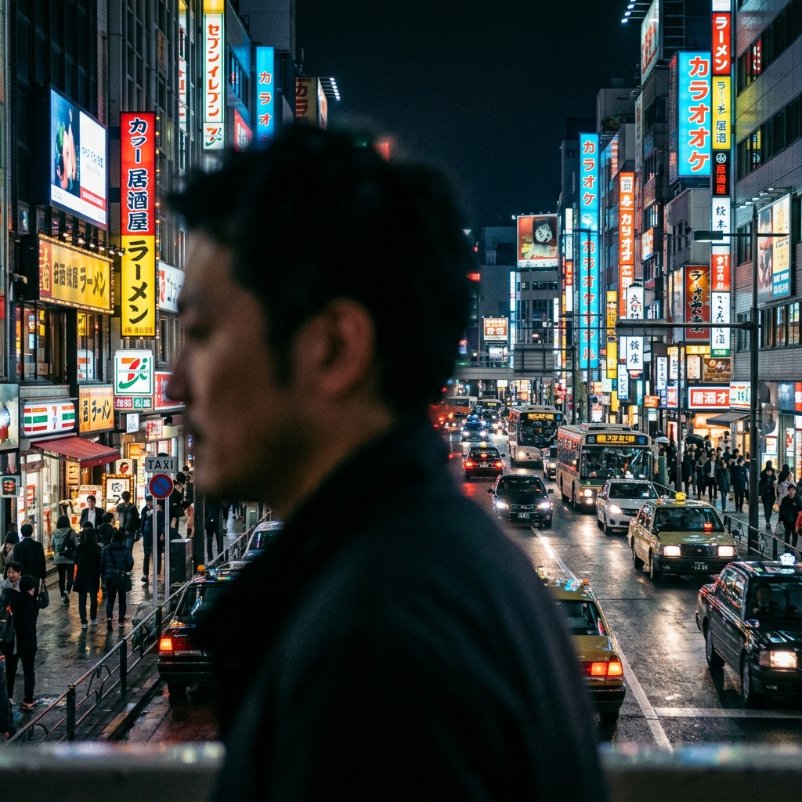

Videoclip "NADA"
Guion Técnico y Storyboard - Eddy Castaño
Propuesta de Colaboración - Para Mila ✨
Hola Mila, como te comentó Dani, estamos preparando el rodaje del nuevo videoclip de Eddy Castaño ("NADA") aquí en Madrid, antes de que regrese a Colombia a finales de agosto.
Nuestra propuesta: Nos encantaría contar con tu asesoría y apoyo en las grabaciones y tomas (para generar portafolio juntos). A cambio, Dani se ofrece a desarrollarte tu propia página web profesional / portafolio sin coste.
Contexto del Proyecto & Enlaces
- 🎵 Canción NADA (Spotify): Escuchar aquí
- 📺 Último videoclip (Lanzamiento en Valencia): Ver en YouTube
- 🌐 Web Oficial Eddy: Visitar (Desarrollada por Dani)
Portafolio de Dani (Para tu futura web)
- 💻 Web Personal: DaniSid.com
- 🚀 Proyecto Empresa: Maison Quintessence
A continuación te dejamos la idea general, los tiros de cámara y el guion técnico que ya tenemos planificado para que le eches un ojo:
Vibra
Melancolía, Electro Funk, Chillout, Cyberpunk
Presupuesto
0$ (Guerrilla Filmmaking)
Cámara
iPhone 13 (Modo Cine)
Técnica Base
P.O.V (1ª persona) + "La Estatua"
🎬 Desglose de Planos (Storyboard)

"La vida me empuja, sin preguntar."
Toma P.O.V.: Cámara en mano caminando rápido por Calle Preciados o Fuencarral.
Mejora: Camina a contraflujo (chocando casi de frente con la multitud) para acentuar el "me empuja". Graba a 60fps y ralentízalo para darle un toque onírico.
Mejora: Camina a contraflujo (chocando casi de frente con la multitud) para acentuar el "me empuja". Graba a 60fps y ralentízalo para darle un toque onírico.

"Dejé mis zapatos, en otro lugar."
Toma P.O.V. (Reflejo Distorsionado): La cámara enfoca tu reflejo en el cristal mojado del vagón de metro.
Mejora Conceptual: En lugar de enfocar unos zapatos literales (que puede verse forzado), vemos tu reflejo borroso siendo "arrollado" visualmente por un tren que pasa al otro lado, simbolizando que dejas tu identidad/pasado atrás.
Mejora Conceptual: En lugar de enfocar unos zapatos literales (que puede verse forzado), vemos tu reflejo borroso siendo "arrollado" visualmente por un tren que pasa al otro lado, simbolizando que dejas tu identidad/pasado atrás.

"El mundo me mira, pero yo no estoy."
Toma Estatua (Plano Medio): Inmóvil en Callao/Gran Vía. La multitud camina desenfocada a tu alrededor.
Mejora de Vestuario: Abrigo largo estructurado. No pestañees. En postproducción, al acelerar el plano, el contraste entre tu inmovilidad y el caos alrededor será brutal.
Mejora de Vestuario: Abrigo largo estructurado. No pestañees. En postproducción, al acelerar el plano, el contraste entre tu inmovilidad y el caos alrededor será brutal.

"No queda nada... Sin ti no queda nada"
Juego Rack Focus (Modo Cine): Perfil inmóvil en primer plano.
Técnica: El foco de la cámara pasa de tu rostro (desenfocando la ciudad) a las luces nítidas del tráfico de Gran Vía (dejándote a ti como una silueta desenfocada).
Técnica: El foco de la cámara pasa de tu rostro (desenfocando la ciudad) a las luces nítidas del tráfico de Gran Vía (dejándote a ti como una silueta desenfocada).
📱 Directrices Técnicas (iPhone 13)
- Bloqueo AE/AF: Mantén pulsada la pantalla para bloquear foco y exposición. Baja manualmente el "solcito" de exposición para que los negros sean puros y la imagen no se llene de grano.
- Apertura (f-stop): Ajusta entre f/2.8 y f/4.0. Si lo bajas más, el recorte del cabello con los fondos complejos (tráfico) se verá muy falso.
- Luz extra de guerrilla: Frente a Schweppes, pide a un amigo que ilumine sutilmente tu rostro con la linterna de otro móvil tamizada (con un papel) desde fuera de cámara.
- Audio Inmersivo: Graba audios sueltos del tráfico y el bullicio para meterlos sutilmente por debajo del máster de la canción.
📍 Ruta y Plan de Rodaje (Logística)
Para optimizar la luz y el tiempo en Madrid, proponemos el siguiente esquema:
- 19:30 - Parque del Oeste / Madrid Río: Atardecer (Golden Hour). Tomas introspectivas (Viento, zapatos).
- 20:45 - Plaza de España a Gran Vía: Hora azul. Pasos de cebra gigantes, transición hacia la noche profunda.
- 21:30 - Plaza Callao / Edificio Schweppes: Noche urbana y dramática. Contraste de neones. Aquí grabamos el clímax de "La Estatua".
- 22:45 - Metro Callao o Sol: Tomas bajo tierra, soledad y cierre conceptual (Andén y reflejos).